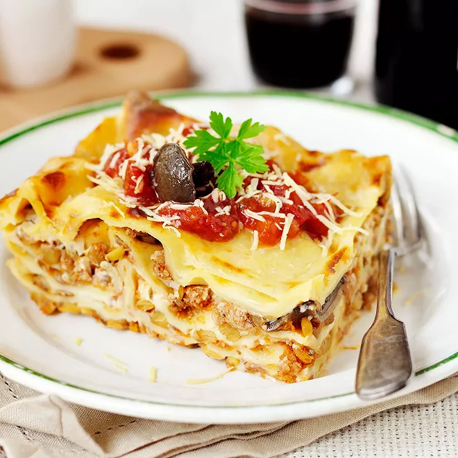

Lasagna

Description
This lasagna recipe is great for vegetarian athletes in deed the green lentils provide a fair amount of protein.
Ingredients
- 8 lasagna sheets
- 250 ml tomatoes puree
- 1 garlic clove
- 120 g coral lentils
- 300 g of raw vegetables (eggplant, zucchini, peppers)
- 400 ml of milk
- 60 g grated vegetable cheese
- dried thyme
- Olive oil
Steps
- Cut the vegetables in little cubes
- Boil them with the coral lentils
- On a pan heat the garlic and add the tomato puree
- Prepare the bechamel with the milk on a pot
- Into oven and let's go